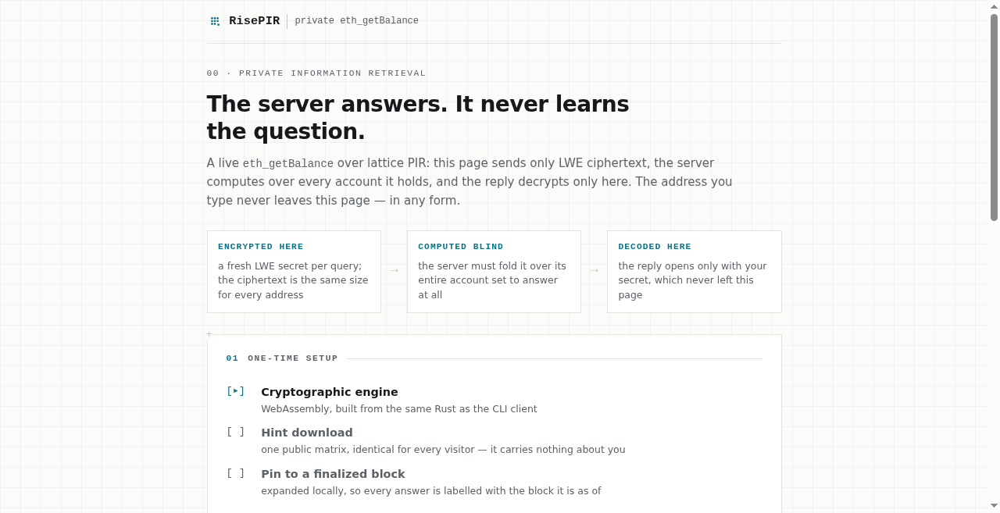
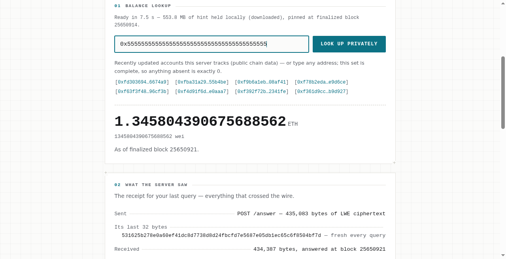
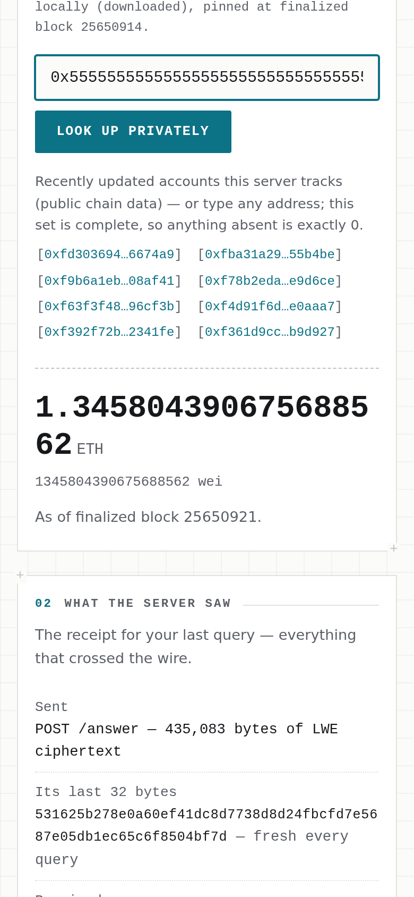

What it does
RisePIR answers eth_getBalance for Ethereum mainnet through keyword-PIR — private
information retrieval keyed by an address rather than a numeric index. A server follows the chain and holds
a database of every nonzero account balance. A client asks for one balance without revealing, to the
server, which account it asked about.
It runs against real mainnet today, serving the complete nonzero-balance set — 204,714,034 accounts as of 2026-09-03, and growing with the chain as new accounts are funded. The server computes over every one of them to answer a single query. It cannot do less without learning which account you asked for.
The system is built around one invariant: never return a wrong answer. An error is acceptable. A silently wrong balance is not.
How it works
The protocol
The client first downloads a one-time hint: the server's database, preprocessed into a matrix that is identical for every visitor, so holding it says nothing about you. To look up a balance, the client builds a short LWE-encrypted query locally and sends it. The server computes its response over the entire database — every account, every time — and returns a ciphertext. Only the client, holding the secret behind its own query, can decode that ciphertext into a balance. The server never sees a plaintext address, and it never learns which row of its database the query actually touched, because in a real sense it touched all of them.
The keyword layer
Ethereum accounts are addressed by address, not by row number, so a plain index-based PIR scheme cannot be queried directly. RisePIR's keyword layer is a Segmented Cuckoo Filter: it maps each address to a small, fixed set of candidate cells, the way any cuckoo filter maps a key, so the client can look up a fingerprint of the address instead of an index. The filter's own cell array doubles as the PIR database matrix — there is no separate index-to-address table to keep in sync with it.
Scale
Figures below describe the live deployment at the complete mainnet set. Sizes are computed directly from the deployment's fixed geometry; timings are measured on the running server.
- Accounts served
- 204,714,034
- First load (
/setup, one-time) - 553.82 MB
(553,819,200 B) - Client memory (resident)
- 1.11 GB
- Server database
- 23.62 GB
- Query (client → server)
- 435.07 KB
- Response (server → client)
- 434.37 KB
- Per-block patch time
- ~11.1 ms at K ≈ 310
- Geometry
- arity 2, bucket size 4,
67,108,864 buckets,
plaintext_bits 8 - "latest"
- finalized — ~13 minutes
behind the public head,
by design
K is mutations per block. The patch-time figure is measured while the server follows the chain head, not during catch-up replay, where a warmer cache makes it look faster than steady state. The account count is a live figure as of 2026-09-03, not a bootstrap-time snapshot; the geometry it was last bootstrapped at is the basis every size in this table is computed from, and the live set grows above the count shown as the chain advances.
Live demo
A running instance answers real queries against the deployment described above, at demo.risepir.org.
The live instance is not always on. It runs during demos and on request. The screenshots below were captured from it while running, so the result is on this page whether or not the server is up.



What this does not protect
RisePIR's cryptographic guarantee is specific: it stops the party operating the server from learning which account a query is about, by observing the traffic it serves. It does not, on its own, protect against a compromised path for delivering the client's code. That is a real, separate trust boundary, and it is stated here deliberately, not as fine print.
Who is choosing your client
On the live demo, the page and its WebAssembly client are delivered by the same host being queried,
demo.risepir.org. PIR keeps that host from learning your address only if the client it handed
you is honest — and whoever serves the page chooses what the client does. A malicious or compromised
origin could serve a modified client that leaks the address it was asked about, and the PIR guarantee
would not catch it.
- Same-origin delivery and a
connect-src 'self'content-security policy: the page is structurally unable to send a request anywhere but the server it already talks to. That constrains a tampered page; it does not constrain a dishonest origin. - The WebAssembly module's only import from its host is a source of random bytes. No fetch, no clock, no storage — it has no channel to exfiltrate anything on its own.
- The wasm client and the command-line client are built from the same Rust source, so auditing one audits both. Running the client on your own machine instead of the browser removes the code-delivery question entirely — only PIR ciphertext crosses the network at that point.
What the cryptography does not hide
PIR hides which account you asked about. It does not hide that you asked, when, how often, or from where — the server still sees a requester's IP address and request timing, like any web server. Nothing in this system anonymizes the network layer.
This page is not the PIR origin
risepir.org — this page — is static and served by a different party than demo.risepir.org,
the PIR origin. It carries no cryptographic client and makes no PIR queries, so it sits outside the trust
boundary described above. The demo deliberately keeps its own page and its PIR transport on one hostname:
same-origin delivery plus that connect-src 'self' policy is what makes the disclosure above
checkable by anyone who looks, rather than a claim taken on faith about a second party.
Being specific about this page's own delivery, since the section above asks you to care who serves a
page: it is hosted on Cloudflare Pages, so Cloudflare terminates TLS for it and can see requests to it.
Cloudflare also injects its own analytics script (cloudflareinsights.com) into this page at
the edge — it is not in the source, and it is not something this page asks for. Neither applies to
demo.risepir.org, which is served directly by its own machine with no proxy in front of it,
precisely so that no third party sits in the path that delivers the cryptographic client.
Paper and code
Paper
Bao Ninh. Incremental Keyword Private Information Retrieval from d-ary Segmented Cuckoo Filters. CANS 2026 — International Conference on Cryptology and Network Security.
Accepted for publication; a DOI and a link to the paper will be added here on release.
Code
The implementation is a Rust workspace: a geometry and wire-codec layer, the PIR server with a verified store, the response-rewind client (also compiled to WebAssembly for the browser), a mainnet feed, an HTTP transport, and a JSON-RPC front end — plus a conformance harness checked against an independent provider on real mainnet blocks.
The repository is orochi-network/private-eth-getbalance,
published under Apache-2.0.